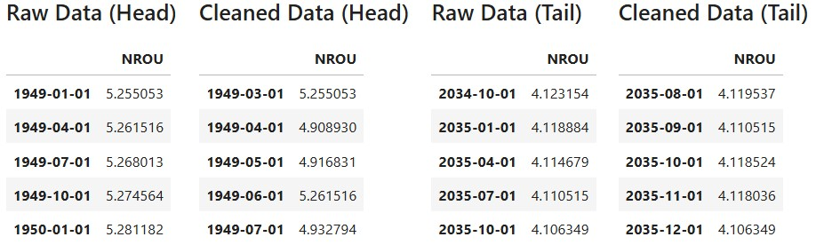
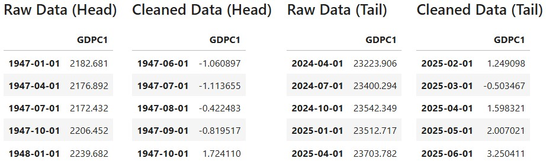
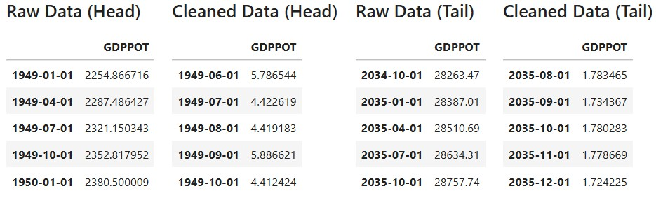
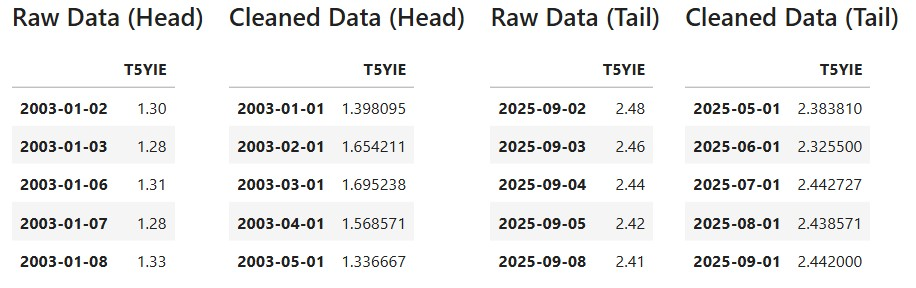

Data Gathering and Data Cleaning
Inflation
Core PCE
- The raw data are monthly data starting from January 1959, indexed so that the average for 2017 equals 100. The cleaned data consist of
PCEPILFE_YoY, which represents the year-over-year percentage change of the raw data, andPCEPILFE_MoM, which represents the month-over-month annualized percentage change of the raw data.
Unemployment
Unemployment Rate
- The raw data are monthly data starting from January 1948, expressed in percent. The cleaned data use these values directly; therefore, the two represent the same data.

Noncyclical Rate of Unemployment
- The raw data are quarterly series starting from the first quarter of 1949, expressed in percent. The cleaned data convert them into monthly series using spline interpolation.

Business Cycles and Policy Regimes
Recession Indicators
- The raw data are a monthly binary series starting from December 1854. A value of 1 is a recessionary period, while a value of 0 is an expansionary period. The cleaned data use these values directly; therefore, the two represent the same data.

Zero Lower Bound dummy
- The raw data are the Federal Funds Effective Rate, provided as monthly series starting from July 1954, expressed in percent. The cleaned data are monthly series that take the value of 1 when the raw data are 0.25 percent or less, and 0 otherwise.
COVID-19 Period dummy
- This data is a monthly binary series that takes the value of 1 from April 2020 to March 2021, and 0 otherwise. The data period is conservatively set from January 1800 to December 2099. No external raw data were obtained or used.
Demand
Real GDP
- The raw data are quarterly data starting from the first quarter of 1947, expressed in billions of chained 2017 dollars. The cleaned data are converted into monthly series by first expressing the quarter-to-quarter changes at an annualized rate in percent and then applying spline interpolation.

Real Potential GDP
- The raw data are quarterly data starting from the first quarter of 1949, expressed in billions of chained 2017 dollars. The cleaned data are converted into monthly series by first expressing the quarter-to-quarter changes at an annualized rate in percent and then applying spline interpolation.

Industrial Production
- The raw data are monthly data starting from January 1919, expressed as an index with the 2017 average set to 100. The cleaned data are monthly series showing the month-over-month changes at an annualized rate in percent.
Retail Sales
- The raw data are monthly data starting from January 1992, expressed in millions of dollars. The cleaned data are monthly series showing the month-over-month changes at an annualized rate in percent.
Supply
Crude Oil Prices
- The raw data are monthly data starting from January 1986, expressed in dollars per barrel. The cleaned data are monthly series showing the year-over-year changes in percent.
Import Price Index
- The raw data are monthly data starting from September 1982, expressed as an index with the 2000 average set to 100. The cleaned data are monthly series showing the year-over-year changes in percent, calculated using the portion of the data that is continuously available from December 1988 onward.
Labor Productivity
- The raw data are quarterly series starting from the first quarter of 1947, expressed as an index with the 2017 average set to 100. The cleaned data are series converted into monthly frequency by first expressing the quarter-to-quarter changes at an annualized rate in percent and then applying spline interpolation.

Labor Markets
Average Hourly Earnings
- The raw data are monthly series starting from March 2006, expressed in dollars per hour. The cleaned data are monthly series showing the month-over-month changes at an annualized rate in percent.
Labor Force Participation Rate
- The raw data are monthly series starting from January 1948, expressed in percent. The cleaned data use these values directly; therefore, the two represent the same data.
Job Openings
- The raw data are monthly series starting from December 2000, expressed in level in thousands. The cleaned data are monthly series showing the month-over-month changes at an annualized rate in percent.
Monetary Policy
Federal Funds Effective Rate
- The raw data are monthly series starting from July 1954, expressed in percent. The cleaned data use these values directly; therefore, the two represent the same data.
Money Suppley (M2)
- The raw data are monthly series starting from January 1959, expressed in billions of dollars. The cleaned data are monthly series showing the month-over-month changes at an annualized rate in percent.

Total Assets of Federal Reserve
- The raw data are weekly series starting from December 18, 2002, expressed in millions of U.S. dollars. The cleaned data are monthly series showing the year-over-year changes in the monthly averages, expressed in percent.
Inflation Expectations
5-Year Breakeven Inflation Rate
- The raw data are daily series starting from January 2, 2003, expressed in percent. The cleaned data are series of their monthly averages.

10-Year Breakeven Inflation Rate
- The raw data are daily series starting from January 2, 2003, expressed in percent. The cleaned data are series of their monthly averages.

1-Year and 5-Year Expected Changes in Inflation Rates
- The raw data are monthly series starting from January 1978, expressed in percent. The cleaned data extract the portion from April 1990 onward, for which continuous monthly data are available.
Merged Cleaned Data
- The following shows the data frame obtained by performing an inner join of all the above cleaned data. For clarity, the data frame is transposed here.